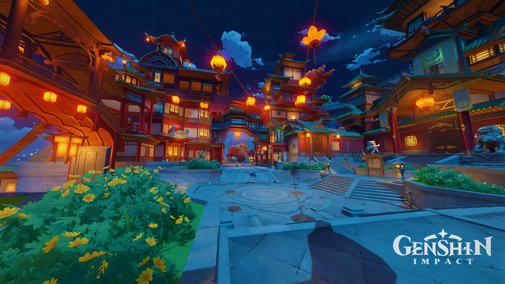

Venti khuyên Nhà Lữ Hành nên đến Liyue để gặp Morax - Nham Thần, hay còn có tên khác là Nham Vương Đế Quân. Tuy nhiên, khi Nhà Lữ Hành đến trong Đỉnh Lễ Thỉnh Tiên hàng năm, Nham Vương Đế Quân đã bị ám sát, và thi thể của ngài ấy được giấu đi. Nhà Lữ Hành gặp Quan Chấp Hành Fatui Tartaglia (Childe), người đang bí mật tìm kiếm Gnosis của Nham Vương Đế Quân. Childe thao túng Nhà Lữ Hành để gây hoang mang cho Liyue bằng cách loan tin tức về cái chết của Nham Vương Đế Quân cho các Tiên Nhân, những người bảo vệ Liyue và đã mất niềm tin vào Thất Tinh. Sau đó, Nhà Lữ Hành và Childe phát hiện ra rằng Zhongli, cố vấn của Vãng Sinh Đường, là hình dạng vật lý của Nham Vương Đế Quân, người đã trao Gnosis Nham của mình cho Signora như một phần của Khế Ước cuối cùng với Nữ Hoàng Băng Giá và thủ lĩnh của Fatui. Zhongli giải thích rằng ông đã làm giả cái chết của mình khi muốn từ bỏ vai trò Thất Thần, và việc các Thất Tinh và Tiên Nhân phối hợp bảo vệ Liyue chứng tỏ rằng họ không cần tới sự bảo hộ của ông nữa. Khi Nhà Lữ Hành hỏi về người anh/em của mình, Zhongli đã nói rằng vì ràng buộc của "Khế Ước" nên ông không thể tiết lộ bất cứ thông tin gì thêm. Trước khi đi đến điểm đến tiếp theo, Nhà Lữ Hành gặp một người thanh niên bí ẩn tên là Dainsleif, và họ cùng nhau điều tra âm mưu của Giáo Đoàn Vực Sâu nhằm tạo ra một vũ khí để lật đổ Đảo Thiên Không. Trong lúc điều tra, Nhà Lữ Hành gặp lại người anh/em của họ, phát hiện ra rằng họ đã trở thành Hoàng tử/ Công Chúa Điện Hạ của Giáo Đoàn Vực Sâu. Người anh/ em này tiết lộ rằng Dainsleif là người bảo vệ Đế chế Vô Thần cổ đại Khaenri'ah, và đã thất bại trong việc bảo vệ người dân khi đất nước này diệt vong 500 năm trước. Nhắc nhở rằng Nhà Lữ Hành sẽ hiểu được bản chất thực sự của thế giới ở cuối cuộc hành trình. Lúc người anh/ em rời đi, Dainsleif đuổi theo, để lại Nhà lữ hành tiếp tục cuộc hành trình của họ.
